Press Enter or double-click to open. Option or Alt with an arrow key moves the icon.
Read Me
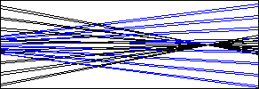
A FORTRAN workspace
This desktop is a working model of a programmer’s workspace. Write a FORTRAN program in the Editor, or open one from the Programs folder, then run it and read what it printed and what it wrote to its output in the Results folder. One of the programs generates the number sieves that the composer Iannis Xenakis used to write music, and seven more write music of their own, which the Player can play. Eighty Columns is a course of ten sheets in the punched cards these programs were once written on: reading the holes, punching them, and running decks through a reader, a printer and a punch. The Calculator works in FORTRAN’s single precision and punches its display on a card; Crible is a game of rebuilding sieves; and two folders of miscellanea hold pictures and toys after Xenakis and after the Dadaists, who made art by chance more than forty years before he made music with a computer.
FORTRAN, short for formula translation, was created at IBM by a team led by John Backus. Its first compiler shipped in 1957 for the IBM 704, and it let scientists and engineers write their calculations as formulas instead of as machine instructions. The language spread quickly. FORTRAN IV followed in 1962, and its 1966 standard, FORTRAN 66, made FORTRAN one of the first programming languages with an official standard. This workspace runs a subset of that language.
Programs of that era were not typed onto a screen. Each line of a program was punched onto its own 80-column card on a keypunch such as the IBM 029, which IBM introduced in 1964, and a program was a stack of cards held together with a rubber band. Dropping a deck was a real hazard. That is why programmers punched sequence numbers into the last eight columns: a card sorter could put a scrambled deck back in order. Eighty Columns, on the desktop, puts those cards back in your hands.
FORTRAN gives each group of columns on a line its own job, and the ruler in the Editor marks the groups so that you can see them.
Columns
What they hold
1
A C or an asterisk in column 1 turns the whole line into a comment.
1–5
These columns hold an optional statement label, which is an unsigned number that other statements can refer to.
6
Any character other than a blank or a zero marks the line as a continuation of the previous statement.
7–72
The statement itself goes here.
73–80
The compiler ignores these columns. The Editor’s status line warns you when a program line runs into them, and so does the job log.
FORTRAN ignores blanks outside of text, so G O T O 20 means the same thing as GOTO 20. FORTRAN of that era had no lowercase letters, so the workspace reads every line in capitals, whatever you type.
The job
About, document 2 of 9
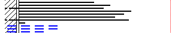
A job is the text in the Editor, read one line at a time. The program comes first and finishes with an END line, and every line after it is data for the program to read. If the program tries to read past the last data line, the job stops with the message END OF FILE ON UNIT 5, just as it would have on an IBM machine. Blank lines at the end of the text are left out of the job.
A line holds at most 80 columns. Anything past column 80 is cut off when the job runs, and the status line in the Editor tells you when a line is that long.
Using the workspace
About, document 3 of 9
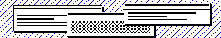
The icons on the desktop open the parts of the workspace, each in a window of its own. Double-click an icon, or move to it with the Tab or arrow keys and press Enter, to open it. Click a window to bring it to the front, drag it by its striped title bar, click the box in its top right corner to make it fill the screen, and click its close box in the top left corner or press Escape to close it. The menus in the menu bar hold the same commands as the buttons in the windows, and the Window menu brings any window to the front.
Writing a program
The Editor holds one text at a time. Open a program from the Programs folder, or choose Open Program from the File menu, and it replaces the text in the Editor; choose New to start an empty one. The ruler above the text marks the label field, the continuation column, the statement field and the ignored columns, and a dotted line runs down the text at column 72. The status line below the text shows the line and column of the cursor and the field it is in, and it warns you when a line runs past column 72 or past column 80. In a data line, which comes after END, all 80 columns count, so the warning comes only past column 80.
The Tab key moves the cursor to column 7, where statements begin, or on to the next field, and Shift + Tab moves it back. Because Tab works inside the text, press Escape to leave the text; after that, Tab moves between the controls again, and a second Escape closes the window. Control + Enter, or Command + Enter on a Mac, runs the job.
Running it
Press Run in the Editor, or choose Run from the File menu. The Printout window opens with whatever the program printed, and a perforated rule marks each new page. The Job Log, with any errors and warnings, and the Listing of the program each have a window of their own, and all four are kept in the Results folder. If the job stops with errors, an alert says so and the job log opens.
Whatever the program writes with WRITE (7,f) goes to its Output, one record to a line. From its window you can open the records in the Editor, either in place of the text or after it as data for another run. You can also copy them, download them as a text file, or play them in the Player.
The course
Eighty Columns is a course in punched cards, ten sheets from easy to hard, each in a window of its own. A card is a grid of 12 rows by 80 columns: click a position to punch it, or move with the arrow keys and press Space. From sheet 4 on, typing on a card punches a whole character, as a keypunch did. The same interpreter checks every answer, and Open in the Editor takes a sheet’s deck to the Editor, one card to a line, to run and change freely. The Punch Codes chart lists the code of every character.
Folders and saved texts
The disk holds everything on the desktop, and its folders can grow while the page is open. New Folder in the File menu makes a folder in the folder at the front, or on the desktop; type its name and press Enter. Save As keeps the Editor’s text as a document in a folder you choose, and Save (Control + S, or Command + S on a Mac) writes it back there. Drag an icon onto a folder, an open folder’s window, the desktop or the Trash to move it, or select it and choose Move To or Move to Trash. Rename renames a folder or a text you made. The workspace’s own documents, programs and folders are locked: they can be moved, but not renamed or thrown away.
Putting icons in order
The View menu orders the icons of the folder whose window is at the front, or of the desktop if no folder window is: by Name, by Kind (folders, then applications, documents, pictures, programs and texts), or by Hand, in an order of your own. To place an icon by hand, drag it between two others, onto an icon’s name or onto an icon that is not a folder, and it goes before the icon after the pointer; a blue bar shows where. Dropped on a folder’s picture, it still goes into the folder. With the keyboard, select an icon and press Option or Alt with an arrow key, or choose Move Icon Earlier or Move Icon Later from the View menu. Moving an icon by hand in a sorted folder keeps the sorted order and goes on from there by hand, and Restore Original Order puts the workspace’s own order back. In the Programs folder each group keeps its own order.
The Calculator and Crible
The Calculator takes the digits and +-*/ from the keyboard, ^ for a power (FORTRAN’s **), and Enter or = for the result; Backspace takes back a digit, Delete clears the entry, and Escape clears everything before it closes the window. It works in single precision, as a FORTRAN REAL does, shows a result in E notation if you ask, fills the display with asterisks when a result has no place in a REAL, and punches its display on the card below it. In Crible, choose a modulus and press a number of your sieve, with the mouse or with the arrow keys and Enter, to add or remove the class of that modulus through it, until your sieve is the target; the keys 2 to 9 choose the modulus, and either sieve can be played as a rhythm.
Nothing is kept
The disk is a model held in memory, so everything on it, saved texts and new folders included, is gone once the page is closed or reloaded. To keep a program, choose Download from the File menu, which saves the text in the Editor as a file on your own computer. When you open another program or start a new one, an edited text is moved to the Trash, and Put Back in the Trash window brings it back until you empty the Trash. Revert returns the text to the way it was when it was opened or last saved.
The language
About, document 4 of 9
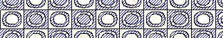
The workspace understands a single main program; subroutines and functions are not supported. A name has up to six letters and digits and must start with a letter. Unless you declare otherwise, names that begin with the letters I through N hold integers, and all other names hold real numbers. Integers are 32 bits wide, and integer division throws away the remainder, so 7/2 is 3. Real numbers have single precision.
Statement
What it does
V = expr
This evaluates the expression and stores the result in V, which can be a variable or an array element. Expressions use + - * / and ** for powers, with parentheses for grouping.
INTEGER, REAL
These declare names as integers or reals, overriding the first-letter rule.
DIMENSION A(n), B(m,n)
This declares arrays of one or two dimensions, numbered from 1.
GO TO n
This jumps to the statement labeled n. The computed form GO TO (n1,n2,...), I jumps to the Ith label in the list.
IF (e) n1, n2, n3
This jumps to n1, n2, or n3 when e is negative, zero, or positive.
IF (cond) stmt
This runs stmt only when the condition is true. Conditions compare values with .LT. .LE. .EQ. .NE. .GT. .GE. and combine them with .AND. .OR. .NOT.
DO n I = m1, m2, m3
This repeats the statements through label n while I counts from m1 to m2 in steps of m3, or in steps of 1 if m3 is left out. As in FORTRAN 66, the loop always runs at least once.
CONTINUE
This does nothing. It usually marks the end of a DO loop.
READ (5,f) list or READ f, list
This reads the next data line, laid out as FORMAT statement f describes.
WRITE (6,f) list or PRINT f, list
This prints a line on the line printer.
WRITE (7,f) list
This writes a record to the program’s output, which the Player can play. The 7 is simply the code for the output.
FORMAT (...)
This describes the layout of a data line, an output record or a printed line. Iw is an integer w columns wide, Fw.d and Ew.d are real numbers with d digits after the point, nX skips n columns, nHtext and 'text' are literal text, and a slash starts a new line or record. Descriptors can be repeated, as in 3I5, or grouped, as in 2(I3,F6.2).
STOP, PAUSE, END
STOP ends the job, PAUSE writes a note in the job log and carries on, and END marks the last line of the program.
The built-in functions are SQRT, ABS, IABS, FLOAT, INT, IFIX, MOD, AMOD, SIN, COS, ATAN, EXP, ALOG, ALOG10, MAX0, MIN0, AMAX1, AMIN1, and SIGN.
The line printer
About, document 5 of 9
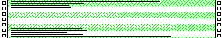
Results came back on a line printer such as the IBM 1403, which printed a whole line at a time onto continuous fan-fold paper. A chain of type spun past a row of hammers, and each hammer fired the moment its character went by. The first character of each printed line is never printed. Instead, it tells the printer how far to move the paper. A blank moves it one line, a 0 leaves a blank line first, a minus sign leaves two blank lines, a 1 jumps to the top of a new page, and a plus sign prints over the line before. This rule caused famous mistakes. If a FORMAT happens to put a 1 in the first position, the printer throws a new page, so printing 123 with I3 starts a new page and prints only 23.
Iannis Xenakis and the sieve
About, document 6 of 9
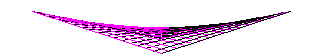
Iannis Xenakis (1922–2001) was a Greek-French composer, architect, and engineer, born in Romania to a Greek family. He came to Paris as a political refugee in 1947. He then spent twelve years in Le Corbusier’s studio, where he took charge of designing the Philips Pavilion for the 1958 Brussels World’s Fair, and he brought an engineer’s habits of mind to music. He composed with probability and set theory, and he was one of the first composers to write music with a computer. In 1962 he ran his Free Stochastic Music program on an IBM 7090 at IBM France in Paris. Xenakis designed the program, and M. F. Génuys and M. J. Barraud coded it in FORTRAN IV. Its output became the ST pieces, among them ST/10 and ST/4, whose titles record the date the data was generated: 8 February 1962. He published the program several times, most completely in his book Formalized Music (1971).
During a residency in Berlin in 1963–64, Xenakis conceived his theory of sieves, a way of building scales and rhythms out of simple arithmetic. A sieve is made from residual classes. The class written here as m@s (Xenakis wrote m with a subscript s) contains every integer x for which x - s is divisible by m, so 3@0 is the sequence …, 0, 3, 6, 9, …. Combining classes by union, intersection, and complement produces patterns that repeat exactly but sound irregular. He first used sieves in Akrata (1964–65), and in Nomos Alpha (1965–66) for solo cello they select the pitches from a microtonal scale.
The sieve generator
About, document 7 of 9
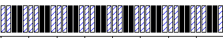
The fifth sample program is a sieve generator written in the same FORTRAN that the workspace runs, in the spirit of Xenakis’s own programs. The first data line after END holds three numbers in 5-column fields. MODE is 1 for the union of the classes, 2 for their intersection, or 3 for the complement of their union. N is the number of classes, from 1 to 10, and LIMIT sets the range, because the program tests every integer from 0 to LIMIT - 1. Each of the next N lines describes one class with a modulus M and a shift S, again in 5-column fields.
The program prints each member of the sieve along with its distance from the member before it, and it writes each member to its output as a record of its own, so that you can feed the members to another program as data. The sample data describes the sieve 5@2 | 5@3 over the integers 0 to 19, which contains 2, 3, 7, 8, 12, 13, 17, and 18. Change the three data lines at the bottom of the program and run it again to hear the idea in numbers, or play its output in the Player to hear it as a rhythm or a scale.
The music programs
About, document 8 of 9
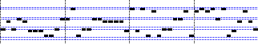
The last seven programs in the Programs folder are music programs. Each one is a FORTRAN program that writes a record to its output for every note, in the layout that the Player reads, and each one follows an idea of Xenakis’s. Their data lines come after the END line, and the comment lines at the top of each program explain what the numbers mean, so you can change them and run the program again.
Sieve scale (a melody)
This program takes the union of several residual classes over the semitones above a base note. The result is a scale that need not repeat at the octave, and a walk by chance on that scale, up to two steps up or down at a time, makes a melody.
Two rhythm sieves
Two sieves over a cycle of pulses strike a low drum and a high one, and the stroke is louder where they fall together. Xenakis built the rhythms of Psappha (1975), for solo percussion, from sieves.
Stochastic cloud (after Achorripsis)
Notes arrive at random at a fixed mean rate, in a band of pitch that rises over the cloud, and the printout sets the counts of notes in each cell of time against the Poisson law. In Achorripsis (1956–57), for 21 instruments, Xenakis used the Poisson law with λ = 0.6.
Markov melody (after Analogique)
A table of chances decides which of five notes follows each note, which makes the melody a Markov chain. Xenakis used Markov chains in Analogique A (1958) and Analogique B (1959).
String glissandi (after Metastaseis)
Each line slides in semitone steps from a note in a cluster to a note in a wide chord, and all the lines take the same time. In bars 309–314 of Metastaseis, Xenakis drew the string glissandi as straight lines.
Brownian melody (after Mikka)
A random walk moves the melody up or down by a few semitones at each pulse and bounces it off the edges of a range, and a note is held for as long as the walk stays on it. Mikka (1971), for solo violin, is one continuous glissando whose path comes from a random walk, the motion that physicists call Brownian.
Arborescence (after Evryali)
A line climbs or falls by one or two semitones at each pulse, bends now and then, and at random splits in two, until as many as six lines sound at once. In Evryali (1973), for piano, Xenakis used arborescences, branching lines that let one line proliferate into as many as six.
The Player
About, document 9 of 9
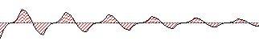
The Player plays a program’s output as sound. A note record holds four numbers in 5-column fields, as FORMAT (4I5) writes them. TIME is the onset in pulses, counted from 0. NOTE is a MIDI note number from 0 to 127, where 60 is middle C. LEN is the length in pulses, and a blank means 1. LOUD is the loudness from 1 to 9, and a blank means 7. A pulse is a quarter of a beat, so at the starting tempo of 120 beats a minute a pulse lasts an eighth of a second.
A record with only its first five columns filled, such as a record from the sieve generator, holds a bare number. With the Rhythm setting, the Player plays each bare number as a time, so a sieve sounds as a rhythm on middle C. With the Scale setting, it plays the numbers one per pulse in the order of the file, as semitones above the C an octave below middle C, so a sieve sounds as a scale. The setting matters only for bare numbers. The music programs write full note records that set their own times and notes, so for their files the setting is turned off. Records that are not notes, such as lines of text, are skipped, and the status line says how many were skipped.
Press Play in Player in the Output window, or Load Output in the Player, and then Play. Pause holds the place, and Stop rewinds to the start. The roll shows every note as a bar, with pitch running up and time across, coloured from pale blue for the quietest notes to red for the loudest, and a red line moves across it as the music plays; click the roll, or use the arrow keys on it, to move the place. The tempo control sets the beats per minute, and Double speed plays the music twice as fast and an octave higher, as a tape machine does when its speed is doubled. Sound starts only when you press Play.
Metastaseis, bars 309–314
picture560 × 360, hatched
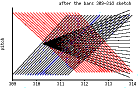
After Xenakis’s graph of the string glissandi in bars 309–314 of Metastaseis (1953–54), the sketch reproduced in Formalized Music. Each straight line is one string part sliding steadily from one pitch to another, and together the straight lines bend into curved surfaces. The piece is scored for 61 players, 46 of them strings with a part each, and was first played at Donaueschingen on 16 October 1955 under Hans Rosbaud.
Three sieves on a line
picture600 × 300, hatched
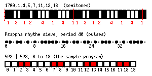
Top: the scale of the first section of Jonchaies (1977). It repeats every 17 semitones, an octave and a fourth, in steps between a minor second and a major third, partly inspired by the Javanese pelog. Middle: the rhythmic sieve of Psappha (1975) for solo percussion, as the musicologist Ellen Flint reconstructed it from Xenakis’s sketches; it repeats every 40 pulses and is built from classes of moduli 8 and 5. Bottom: 5@2 | 5@3, the sieve that the sample program computes.
Achorripsis, the matrix
picture640 × 330, hatched
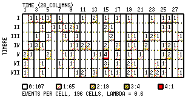
After the matrix of Achorripsis (1956–57), for 21 instruments, which Xenakis worked out by hand, before he had the use of a computer. Its 28 columns are units of time and its 7 rows are timbres, among them strings played with glissando, pizzicato and the bow, so the matrix has 196 cells. He set the mean number of events per cell at λ = 0.6 and let the Poisson law decide how many cells hold no event, one, two, three or four: 107, 65, 19, 4 and 1. Those counts are his; where they sit in this drawing comes from a seeded random generator, not from the score. Hermann Scherchen conducted the first performance in 1958.
Analogique A and B: screens
picture640 × 344, hatched
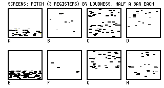
In the spirit of the screens of Analogique A (1958), for nine strings, and Analogique B (1959), for sine tones on tape, which are played together. Xenakis imagined every sound as a cloud of tiny grains. A screen is a short slice of time, half a bar long, in which grains are scattered over registers of pitch and loudness at a chosen density, and he defined eight of them, lettered A to H. A Markov chain decided which screen followed which, by fixed probabilities of passing from one to another. The tape of B was begun in Hermann Scherchen’s studio at Gravesano and finished at the Groupe de Recherches Musicales in Paris. The grains drawn here are random.
Nomos Alpha and the cube
picture440 × 330, hatched
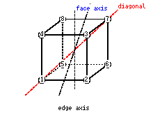
Nomos Alpha (1965–66) for solo cello was commissioned by Radio Bremen for Siegfried Palm and dedicated to Aristoxenus, Évariste Galois and Felix Klein. Its first layer is organised by the 24 rotations of a cube, which carry the numbered corners onto one another, and its pitches come from sieves. The rotations are the identity; turns of 90°, 180° and 270° about the 3 axes through opposite faces (9); turns of 120° and 240° about the 4 diagonals (8); and half-turns about the 6 axes through opposite edges (6). A diagram drawn for this portfolio.
A mock printout in the manner of the ST program, which Xenakis ran on the IBM 7090 at IBM France. ST/10-1,080262, for ten instruments, is named for its run on 8 February 1962 and was first played at IBM France’s headquarters in Paris on 24 May 1962. The columns and numbers here were made for this portfolio and are not Xenakis’s output.
Arborescences
picture560 × 320, hatched
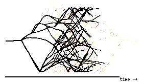
After Xenakis’s arborescences, the tree-like drawings on the plane of pitch and time that he began in the early 1970s. A single line branches into several; in Evryali (1973) for piano, one line grows into as many as six. He also put whole trees through transformations, which the faint dotted mirror image only gestures at. The technique returns in Erikhthon (1974) for piano and orchestra and in Jonchaies (1977) for orchestra.
A UPIC page
picture560 × 320, hatched
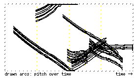
In the spirit of a page drawn on the UPIC (Unité Polyagogique Informatique du CEMAMu), the drawing computer completed in 1977 at Xenakis’s research centre CEMAMu in Paris. The composer drew on a large tablet, with time running across and pitch up the page, and the machine played the drawing. Mycènes Alpha (1978) was the first piece composed entirely on it, made for the Polytope de Mycènes, performed on 2–5 September 1978 in the ruins of Mycenae.
3 Standard Stoppages
picture3 threads, 1 metre each
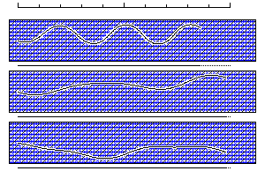
After Marcel Duchamp’s 3 Standard Stoppages (3 stoppages étalon, 1913–14), now in the Museum of Modern Art, New York. Duchamp held a thread one metre long straight and level, one metre above a strip of canvas painted Prussian blue, and let it fall to twist as it would; he fixed each of three threads where it landed, and later had wooden rulers cut to their curves, three new units of length made by chance. The threads here are let fall by a random generator, not traced from Duchamp’s: each is one metre long, and only the way it lies, and so the span between its ends, changes from fall to fall.
Karawane
sound poem, with a picturethe first nine lines
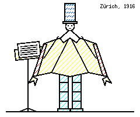
Ball as he was photographed reciting at the Cabaret Voltaire in 1916, in a costume of cardboard: a tall hat striped in blue and white, a high collar, a cape with stiff wings gold outside and scarlet within, and his legs in cardboard tubes. A drawing made for this album after the photograph.
KARAWANE
jolifanto bambla ô falli bambla
grossiga m’pfa habla horem
égiga goramen
higo bloiko russula huju
hollaka hollala
anlogo bung
blago bung
blago bung
bosso fataka
This plays each vowel of these lines as a note, from u, the lowest, up through o, a and e to i, the highest, one syllable to a pulse: a toy for this album, not a reading of the poem.
The opening of Hugo Ball’s Karawane (1916), one of his Verse ohne Worte, poems without words. Ball and Emmy Hennings opened the Cabaret Voltaire in Zürich in February 1916, and there on 23 June 1916 Ball recited his first sound poems, dressed in a costume of cardboard. Karawane was printed in Richard Huelsenbeck’s Dada Almanach (Berlin, 1920) with its lines set in many different typefaces; here the screen’s two faces, inverted, ruled and spaced, stand in for them. The poem goes on for eight more lines.
Squares by chance
picturepaper squares, dropped
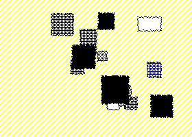
After Hans (Jean) Arp’s Untitled (Collage with Squares Arranged according to the Laws of Chance), 1916–17, torn and cut paper on paper, in the Museum of Modern Art, New York. Arp is said to have let squares of paper fall onto a sheet and pasted them where they landed; historians have pointed out how carefully balanced the result is, so chance and his hand both had a part. Here a random generator drops the squares, and no hand puts them right.
To make a Dadaist poem
recipe, with a hatTristan Tzara, 1920
Prenez un journal. Prenez des ciseaux. Choisissez dans ce journal un article ayant la longueur que vous comptez donner à votre poème. Découpez l’article.
Take a newspaper. Take some scissors. Choose an article as long as you mean your poem to be, and cut it out. Then cut out each of its words with care and put them in a bag. Shake it gently. Take the cuttings out one after another, and copy them out conscientiously in the order in which they left the bag. The poem will be like you.
The recipe of Tristan Tzara’s Dada manifeste sur l’amour faible et l’amour amer (Dada manifesto on feeble love and bitter love), which he read in Paris in December 1920. The French is its first four lines; the English, the whole recipe, is translated for this album.
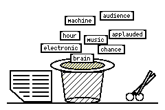
The newspaper, the scissors, and a hat standing in for the recipe’s bag. The words on the slips are cut from the article below. A drawing made for this album.
The bag
A mock news item, written for this album. ST/10 was first played at IBM France’s headquarters on 24 May 1962. Write or paste an article of your own, if you like.
The poem appears here.
In the Editor, the poem is a FORTRAN program that prints it, one line of the poem to a printed line, on a new page.
Lautgedicht
sound poem, blacked out
After Man Ray’s Lautgedicht (sound poem), 1924: a poem in which every word is a black bar, so that nothing is left to read but the shape of the verse and the length of its words. Here the bars black out a text of the workspace instead: the program in the Editor, whose columns give it a shape of its own, or the poem cut up from Tzara’s bag.
Editor: Squares and roots
FORTRAN source12 lines
labelstatement 7–72ignored
Line 1, Col 1comment
Each line is one record. Tab moves to column 7 or the next field, Shift Tab moves back, Escape leaves the text, and Control Enter runs the job.
Printout
no job yet
Nothing has been run yet.
Run a program to see what it prints.
Job Log
Errors, warnings and the STOP code appear here.
Listing
The listing of the program appears here after a run.
Output
0 recordsone record per line
Nothing has been written to the output yet.
Player
no file loaded
0:00.0 / 0:00.0
No file is loaded. Run a program that writes notes to its output, then press Load Output.
Trash
Calculator
Single precision, as a FORTRAN REAL.
Type the digits and + - * / on the keyboard; a caret is a power, Enter or the equals sign gives the result, Backspace takes back a digit and Delete clears the entry. Escape clears everything, and a second Escape closes the Calculator.
Crible
sieve 1
Xenakis called his sieves cribles. The class m@s holds every number that leaves s over when divided by m, and a sieve here is a union of classes. Rebuild the target from as few classes as you can: choose a modulus, then press a number in your sieve, and the class of that modulus through the number joins it, or leaves it if it is already there.
The target
Your sieve (empty)
in bothmissingnot in the target
In your sieve, the arrow keys move between the numbers, Enter or Space adds or removes the class through a number, and the keys 2 to 9 choose the modulus.
Eighty Columns
10 sheetskept while the page is open
Eighty Columns
Ten exercises in punching FORTRAN on cards
A punched card holds one line of a program, written as holes in 80 columns and 12 rows. These ten sheets teach you to read the holes, punch them, lay out a FORTRAN statement on a card, and run decks through a card reader, a line printer and a card punch. The workspace’s own interpreter checks every answer.
Progress
01
02
03
04
05
06
07
08
09
10
None of the ten sheets is solved yet.
Progress lasts only while this page is open. Nothing is stored, so reloading the page resets every sheet.
The sheets
The first three sheets teach the holes themselves: how to read a card, and how to punch digits, letters and signs with the codes of the IBM 029 keypunch, which IBM introduced in 1964. The next sheets teach the parts of a FORTRAN card, continuation cards, the order of a deck, data cards, the line printer and the card punch. On the last sheet you punch a whole program. The hatching beside each sheet marks its difficulty, from a single set of lines to solid.
When an answer is wrong, the feedback says why, and it quotes the interpreter’s own messages where there are any. Every sheet has hints, and the later sheets can show a correct card if you are stuck. The sheets run from easy to hard, but they can be opened in any order, and a solved sheet offers the next one.
Punch Codes
chartfrom the interpreter’s own table
The card
IBM introduced its 80-column card in 1928. A card has 80 columns and 12 rows, and each column holds one character as a pattern of holes. From top to bottom the rows are 12, 11, 0, and then 1 to 9. A digit is a single hole in its own row. A letter is a zone hole in row 12, 11 or 0 together with one digit hole. Most signs add a hole in row 8 to a digit hole, and some add a zone hole as well. Both tables below are built from the interpreter’s own code table.
Single holes, and a zone hole with one digit hole
A hole in row 8 with a digit hole from 2 to 7, and an optional zone hole
Using a card
Click a position on a card to punch a hole there, and click it again to fill the hole in. A real hole could not be filled in, but here it can.
With the keyboard, press Tab to move into the card. The arrow keys move between positions, Home and End go to the first and the last column, and Page Up and Page Down go to the top and the bottom row. Space or Enter punches or clears the hole under the cursor. A screen reader announces the row, the column and whether the position is punched.
From sheet 4 on, the keypunch is switched on. Typing a character on the card punches that character’s code into the current column and moves on to the next one, as a keypunch did. Delete clears the current column, Backspace clears the column before it, and the right arrow key leaves a column blank. Those sheets also have a keypunch line above the card, where you can type the whole card as text.
Sheet 01: Read a card
sheet 1 of 10difficulty 1 of 6
Difficulty 1 of 6
Solved
Read a card
This card was punched without printing, so nothing is written along its top edge. Read the holes column by column and type the text that the card holds. FORTRAN ignores blanks, and so does this check, so you need not count the empty columns.
On the machine. The IBM 029 printed each character along the top edge of the card as it punched the column. Cards punched by other machines could come out with no printing at all, and an interpreter such as the IBM 557 read their holes and printed the characters for people to read.
Sheet 02: Punch a character
sheet 2 of 10difficulty 1 of 6
Difficulty 1 of 6
Solved
Punch a character
Punch five characters, one in each column of this short card: a digit, then a letter from each of the three zones, then a sign. Each character is checked as you go, and the next one appears when it is right. The keypunch is switched off on this sheet, so put in every hole yourself, with a click or with Space or Enter.
The zones. Rows 12, 11 and 0 are the zone rows. A to I take a hole in row 12, J to R a hole in row 11, and S to Z a hole in row 0, each with a digit hole that counts its place in the group. S is the first letter of its group, but its digit is 2, because 0 and 1 together already mean the slash.
Sheet 03: Punch a word
sheet 3 of 10difficulty 2 of 6
Difficulty 2 of 6
Solved
Punch a word
Punch the expression shown below, starting in column 1, with one character in each column. A blank is a column with no holes in it. The printing along the top of the card shows what you have punched so far. The keypunch is still switched off.
On the machine. A hole could not be unpunched, so the only way to correct a mistake was to punch a new card. The operator put the spoiled card in the 029’s reading station and held down the DUP key, which copied its columns onto a fresh card up to the mistake.
Sheet 04: The card’s fields
sheet 4 of 10difficulty 2 of 6
Difficulty 2 of 6
Solved
The card’s fields
This program sets I to 7, jumps over the card that would reset it, and prints I at statement 30. Two of its cards are blank. Punch card 1 as a comment that says what the program does. Punch card 5 with the label 30 and the statement WRITE (6,40) I. The program has to run and print the target.
Columns
What they hold
1
A C or an asterisk here makes the whole card a comment.
1–5
An optional statement label: a number that other statements can jump to.
6
Any character but a blank or a zero marks a continuation card.
7–72
The statement itself.
73–80
Ignored by the compiler. These columns held sequence numbers.
On paper first. Programmers often wrote their programs on coding forms ruled into the same columns, and keypunch operators punched the cards from the forms. The band under each card here is ruled the same way.
Target printer output
Sheet 05: Continuation cards
sheet 5 of 10difficulty 3 of 6
Difficulty 3 of 6
Solved
Continuation cards
The line that this program prints is too long for the 66 statement columns of one card. Card 3 holds the start of its FORMAT statement and ends with a comma. Punch card 4 as a continuation card that finishes the statement, so that the printer prints exactly the target line.
A statement continues onto the next card when that card has any character other than a blank or a zero in column 6. Columns 1 to 5 of a continuation card stay blank, and its columns 7 to 72 are joined onto the end of the statement. Blanks outside quoted text are ignored, so the empty columns at the end of card 3 do no harm. Inside quotes, every blank is printed.
Target printer output
Sheet 06: The dropped deck
sheet 6 of 10difficulty 3 of 6
Difficulty 3 of 6
Solved
The dropped deck
Someone dropped this deck. Every card still carries its sequence number in columns 73 to 80, so the order can be restored. Put the cards back in order, either with the card sorter or by moving them one at a time, and then run the deck to check it.
The sorter reads one column of every card and drops each card into the pocket for the digit punched there. Cards with no digit in that column go to the reject pocket. The pockets are then picked up in order, from 0 to 9 with the rejects last, and the cards inside each pocket keep the order in which they arrived.
On the machine. IBM’s 083 sorter read one column per pass at 1,000 cards a minute and had 13 pockets, one for each row and one for blanks and rejects. A key several columns wide took one pass per column.
Sheet 07: Data cards
sheet 7 of 10difficulty 4 of 6
Difficulty 4 of 6
Solved
Data cards
This program reads a count from its first data card, then reads that many numbers, one to a card, and prints the count and the sum. Punch data cards after the END card so that the printer prints the target line. Any numbers that give the target will do.
Every card after END is data. FORMAT (I5) reads an integer from columns 1 to 5 of a card and ignores the rest of it. If the program asks for a card after the last one, the job stops with END OF FILE ON UNIT 5.
Target printer output
Sheet 08: FORMAT and the line printer
sheet 8 of 10difficulty 4 of 6
Difficulty 4 of 6
Solved
FORMAT and the line printer
Card 5 is blank. Punch FORMAT statement 10 so that the printer output matches the target exactly, character for character. Note that the target begins on a new page.
A FORMAT lays out a printed line. Iw prints an integer right-justified in w positions, Fw.d a real number with d digits after the point, nX skips n positions, and nHtext or 'text' prints text.
First character
What the printer does
blank
Moves the paper up one line.
0
Leaves one blank line first.
-
Leaves two blank lines first.
1
Starts a new page.
+
Prints over the line before.
The first character of every printed record is this carriage control character, and it is never printed.
Target printer output
Sheet 09: Punch, then feed back
sheet 9 of 10difficulty 5 of 6
Difficulty 5 of 6
Solved
Punch, then feed back
Program A reads a number N from its data card. It punches a card holding N, and then one card for each square 1, 4, 9 and so on, up to N squared. Program B reads cards like these and prints their total. Choose N, punch it on program A’s data card, run program A, and feed the cards it punches to program B, so that program B prints the target line.
The cards a program punches land in the output stacker. They are ordinary cards, so they can be carried back to the reader as data for the next job. A program cannot read the cards it punches during the same run.
AProgram A, the punch
Output stacker
Program A has not been run yet.
BProgram B, the reader
Target printer output for program B
Sheet 10: A deck of your own
sheet 10 of 10difficulty 6 of 6
Difficulty 6 of 6
Solved
A deck of your own
Punch a complete program, from its first card to its END card, that prints the target output exactly. Any program that does it counts. Add cards with the buttons under the deck, and use everything the earlier sheets taught: the fields, FORMAT, and the carriage control character.
The About document The language lists the statements the interpreter understands, and the Programs folder holds sample programs to borrow from. A loop is written DO 10 I = 1, 5, and it repeats every card down to the one labelled 10, which is usually a CONTINUE.